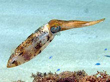

Squid
Squid are cephalopods in the superorder Decapodiformes with elongated bodies, large eyes, eight arms and two tentacles.
Evolution
Crown coleoids (the ancestors of octopuses and squid) diverged at the end of the Paleozoic, in the Permian.
Squid are cephalopods in the superorder Decapodiformes with elongated bodies, large eyes, eight arms and two tentacles.
Crown coleoids (the ancestors of octopuses and squid) diverged at the end of the Paleozoic, in the Permian.